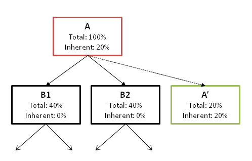

Tree Maps |
 |
Tree maps are shown by the allocation call tree view,
the allocation tree map in the heap walker,
the biggest objects view in the heap walker
as well as the call tree view
Please see the Wikipedia page on tree maps for more information on tree maps in general. |
| |
Tree maps in JProfiler are alternate visualizations of associated trees. Each rectangle
in the tree map represents a particular node in the tree. The area of the rectangle is proportional to the length
of the percentage bar in the tree view. In contrast to the tree, the tree map gives you a
flattened perspective of all leafs in the tree. If you are mostly interested in the dominant leafs
of the tree, you can use the tree map in order to find them quickly without having to dig into the branches
of the tree. Also, the tree map gives you an overall impression of the relative importance of leaf nodes.
By design, tree maps only display values of leaf nodes. Branch nodes are only expressed in the way the leaf nodes are nested. For non-leaf nodes which have significant inherent values, JProfiler constructs synthetic child nodes. In the diagram below, you can see that node A has an inherent value of 20% so that its child nodes have a sum of 80%. To show the 20% inherent value of A in the tree map, a synthetic child node A' with a total value of 20% is created. It is a leaf node and a sibling node of B1 and B2. A' will be shown as a colored rectangle in the tree map while A is only used for determining the geometric arrangement of its child nodes B1, B2 and A'.  |
| |
The actual information for tree map nodes is displayed in tool tips that are immediately shown when
you hover over the tree map. It corresponds to the information that is shown in the tree view mode.
If a tree map rectangle exceeds a certain size, its name is printed directly in the tree map.
The tree map is shown up to a maximum nesting depth of 25 levels. The depth of the particular leaf in the tree map is encoded in its color. The color scale blends blue into yellow, where blue indicates a smaller and yellow a larger depth. The scale is always relative to all currently displayed nodes. For example, if you zoom into a particular area of the tree map, the scale will be re-adjusted so that that the depth of the parent node corresponds to blue. Below the tree map, a legend presents all possible colors as well as the displayed maximum and minimum depths. Double-clicking on any colored rectangle in the tree map will zoom to the parent node unless the node is already a top-level node. There are tool bar actions for for zooming in and zooming out, as well as as context actions for showing the actual root of the associated tree. In order to explore the hierarchical environment of a particular leaf in the tree map, there is a context action "Show In Tree", that switches to the tree view mode and selects the same node there. |